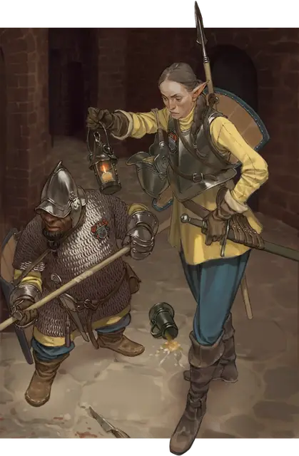

Страж
Guard
Средний или Маленький Гуманоид, Нейтральный

Класс Защиты 16 Инициатива +1 (11)
Хиты 11 (2к8 + 2)
Скорость 30 футов
| мод | спас | ||
|---|---|---|---|
| СИЛ | 13 | +1 | +1 |
| ЛОВ | 12 | +1 | +1 |
| ТЕЛ | 12 | +1 | +1 |
| мод | спас | ||
|---|---|---|---|
| ИНТ | 10 | +0 | +0 |
| МДР | 11 | +0 | +0 |
| ХАР | 10 | +0 | +0 |
Чувства пассивное Восприятие 12
Языки Общий
Опасность 1/8 (25 опыта; БВ +2)
Действия
Копьё. Бросок рукопашной или дальнобойной атаки: +3, досягаемость 5 фт. или дистанция 20/60 фт. Попадание: 4 (1к6 + 1) Колющего урона.
Бонус мастерства +2
Среда обитания Любая
Сокровища Личные, Оружейные
Стражи
Часовые и караульные
Стражи охраняют живых существ, места и ценности — будь то за плату или из чувства долга. Службу они могут нести как бдительно, так и спустя рукава. Одни поднимают тревогу при первом же признаке опасности и защищают вверенное им до последней капли крови. Другие же, если награда не соразмерна нависшей угрозе, без оглядки пускаются в бегство.
Стражи весьма наблюдательны, однако немногие из них обладают серьёзной боевой выучкой. Среди них встречаются обычные вышибалы, соглядатаи, члены городского дозора и прочие зоркие воители.